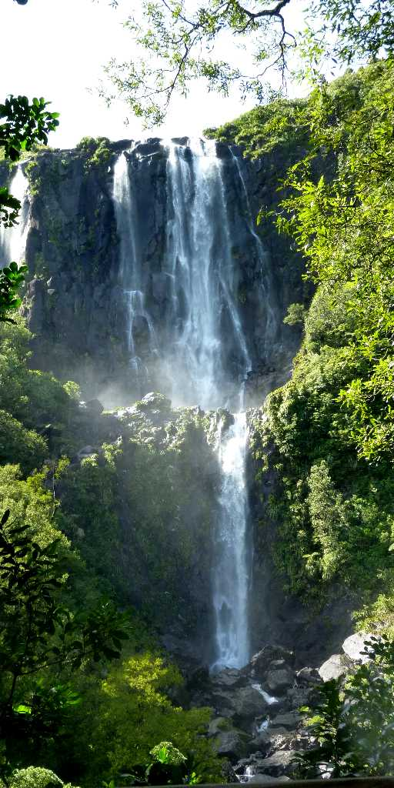
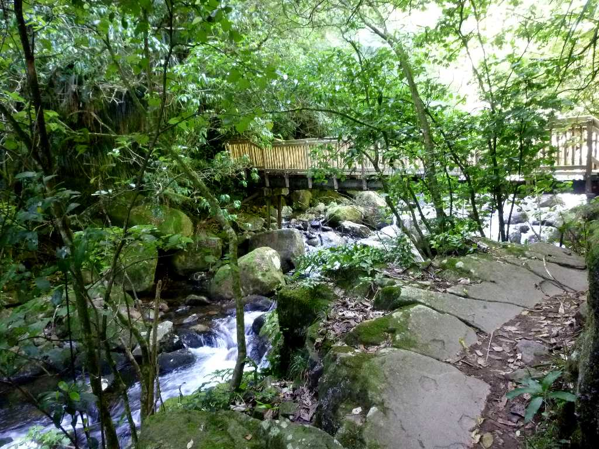

Wairere Falls Kaimai Mamaku Forest Park
カイマイママク森林公園にある ニュージーランド北島の最高を誇る落差１５３ｍのワイレレ滝
March 30 2011 Wairere Falls

Wairere Falls Track
ワイレレ滝から流れ出る渓流沿いに苔生した岩とシダの森を約２ｋｍ登ると滝を見晴らす展望台に到着する
Navi Outdoor Tours New Zealand